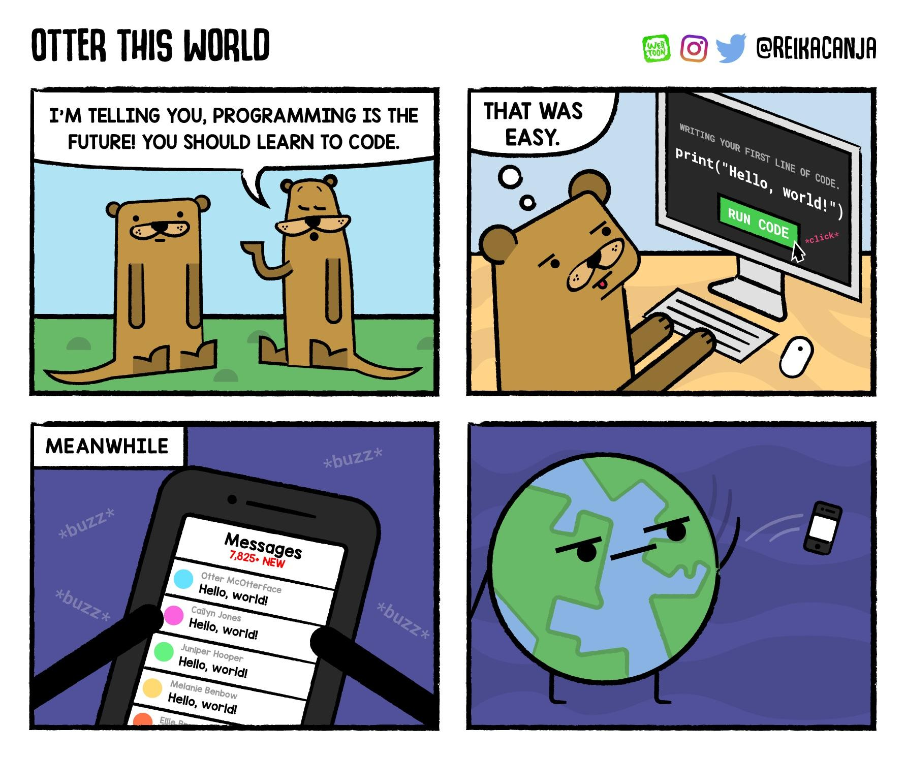

Robert Guderian
Syntax, usage, debugging

aka shebang
if/elif/elseNo arrays, everything is a list, has functions
Totally nuts key/value pair table (hash)
while is what you expect
for is a messfor is an iterator
Works for dicts, sets, and a lot of other things.
for-likeTo recreate C/Java for…
file-like objectsSockets, files, and other devices that are read/write are file-like objects
We get read, write, and sometimes seek.
With some string format
We can set the types for arguments, and return types (new in 3.5). see the docs
def function(aNumber: int, aString:str) -> str:
'''
Add the number to the back of the string
'''
return aString + " " + str(aNumber)Not actually enforce, just for ‘hints’
pdbimport pdb; pdb.set_trace()
You drop into a gdb-like session.